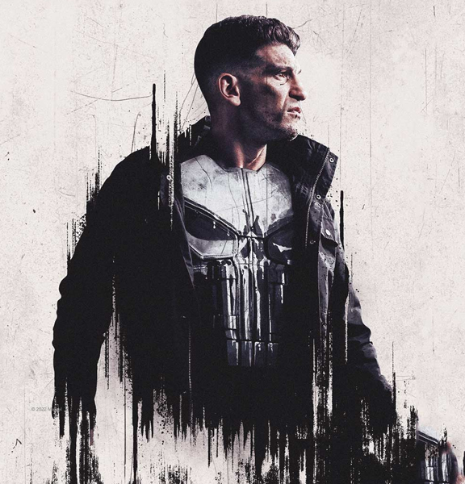
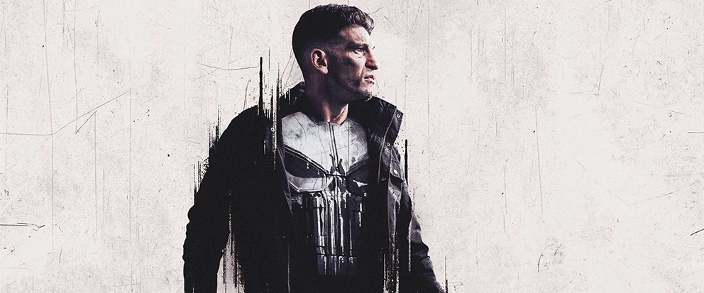
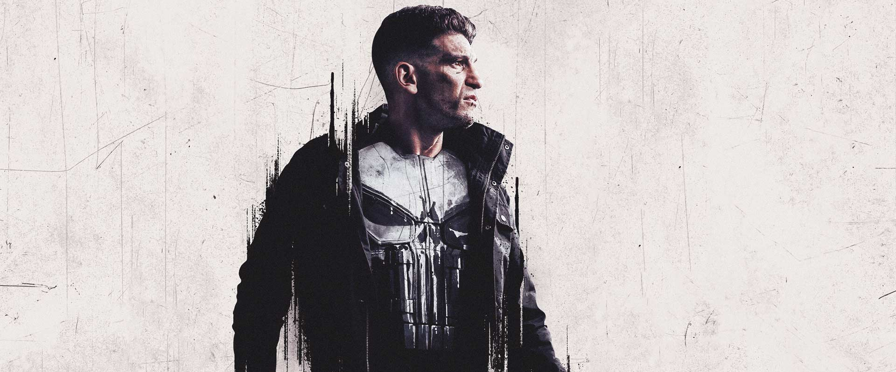
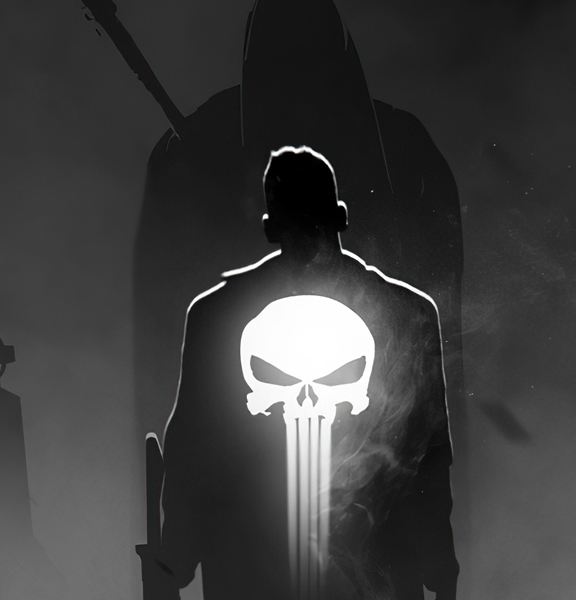
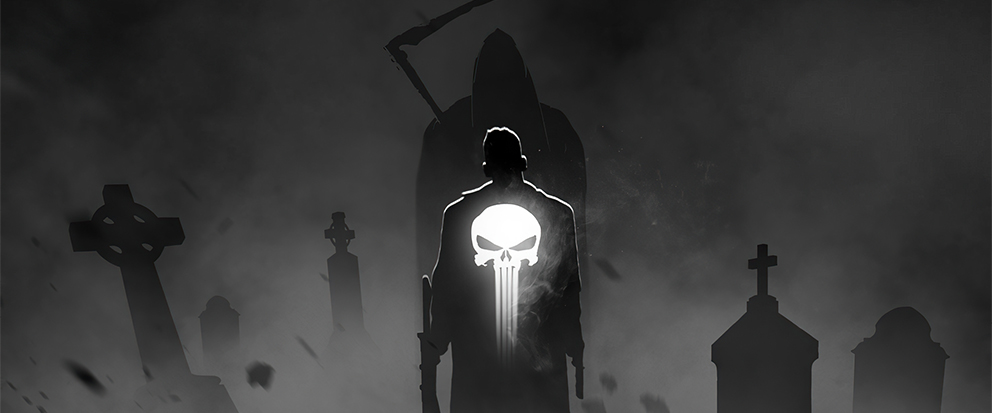

The Punisher es un personaje de Marvel Comics que apareció por primera vez en 1974 en The Amazing Spider-Man #129. Su nombre real es Frank Castle (originalmente Frank Castiglione), un exmarine estadounidense con entrenamiento militar de élite. A diferencia de otros héroes de Marvel, The Punisher no tiene superpoderes: su fuerza proviene de su disciplina, experiencia en combate y un inquebrantable sentido de justicia.
La historia de origen de Frank Castle es trágica. Mientras disfrutaba de un día en el parque con su esposa y sus hijos, presenció un ajuste de cuentas de la mafia. Al intentar defender a su familia, todos fueron asesinados frente a él, dejándolo como único sobreviviente. Este trauma lo llevó a iniciar una guerra personal contra el crimen, jurando vengar a su familia y castigar a los criminales de manera definitiva.
Su símbolo más reconocible es la calavera blanca que lleva en el pecho. Más que un adorno, este emblema se convirtió en un ícono que infunde miedo en sus enemigos. The Punisher se caracteriza por usar armas de fuego, cuchillos, explosivos y tácticas militares, a diferencia de superhéroes como Spider-Man o Daredevil, que intentan no matar a sus oponentes. Su filosofía es clara: eliminar el mal de raíz, incluso si eso significa romper la ley.
En los cómics, The Punisher ha tenido múltiples series propias y crossovers con otros personajes del universo Marvel. Ha enfrentado a mafiosos, carteles de droga, terroristas e incluso supervillanos. Sus métodos extremos lo han puesto en conflicto con héroes como Daredevil, Spider-Man y los X-Men, quienes lo ven más como un vigilante peligroso que como un aliado. Sin embargo, su popularidad entre los lectores ha hecho que siga siendo un personaje clave dentro de Marvel.
The Punisher también ha tenido varias adaptaciones en cine y televisión. Aunque hubo películas en los años 80 y 2000, la versión más aclamada llegó con la serie de Netflix estrenada en 2017, donde fue interpretado por Jon Bernthal. Esta producción exploró el lado humano y psicológico de Frank Castle, mostrando tanto su sed de venganza como su lucha interna por encontrar un propósito más allá de la violencia.
Hoy en día, The Punisher es considerado un anti-héroe. Representa la delgada línea entre justicia y venganza, y plantea preguntas sobre los límites de la moralidad en la lucha contra el crimen. Su legado ha trascendido los cómics, convirtiéndose en un personaje culturalmente influyente, amado por unos y cuestionado por otros, pero siempre recordado como el hombre que declaró la guerra contra el crimen sin superpoderes, solo con su voluntad y sus armas.
En los cómics, The Punisher ha tenido múltiples series propias y crossovers con otros personajes del universo Marvel. Ha enfrentado a mafiosos, carteles de droga, terroristas e incluso supervillanos. Sus métodos extremos lo han puesto en conflicto con héroes como Daredevil, Spider-Man y los X-Men, quienes lo ven más como un vigilante peligroso que como un aliado. Sin embargo, su popularidad entre los lectores ha hecho que siga siendo un personaje clave dentro de Marvel.
The Punisher también ha tenido varias adaptaciones en cine y televisión. Aunque hubo películas en los años 80 y 2000, la versión más aclamada llegó con la serie de Netflix estrenada en 2017, donde fue interpretado por Jon Bernthal. Esta producción exploró el lado humano y psicológico de Frank Castle, mostrando tanto su sed de venganza como su lucha interna por encontrar un propósito más allá de la violencia.
Hoy en día, The Punisher es considerado un anti-héroe. Representa la delgada línea entre justicia y venganza, y plantea preguntas sobre los límites de la moralidad en la lucha contra el crimen. Su legado ha trascendido los cómics, convirtiéndose en un personaje culturalmente influyente, amado por unos y cuestionado por otros, pero siempre recordado como el hombre que declaró la guerra contra el crimen sin superpoderes, solo con su voluntad y sus armas.
Frank Castle intenta dejar atrás su vida como vigilante, pero descubre una conspiración militar que conecta con la muerte de su familia. La temporada explora su duelo y cómo vuelve a tomar el manto de "The Punisher".
Frank se ve envuelto en una red de criminales que persiguen a una joven. Además, su viejo enemigo Billy Russo regresa como Jigsaw, lo que lleva a Castle a enfrentarse de nuevo a su lado más oscuro.

Debutó en la serie Daredevil, chocando con Matt Murdock por sus métodos violentos. Su aparición fue tan fuerte que le valió una serie propia en Netflix poco después. Luego volvió a aparecer en la nueva serie de Daredevil, conocida como "Daredevil: Born Again".
Entre sus historias más icónicas están Welcome Back, Frank (2000), que revitalizó al personaje, y The Punisher: War Journal, una serie que mostró su guerra sin descanso contra el crimen. También se destacan arcos como Born, que narra sus orígenes en Vietnam.